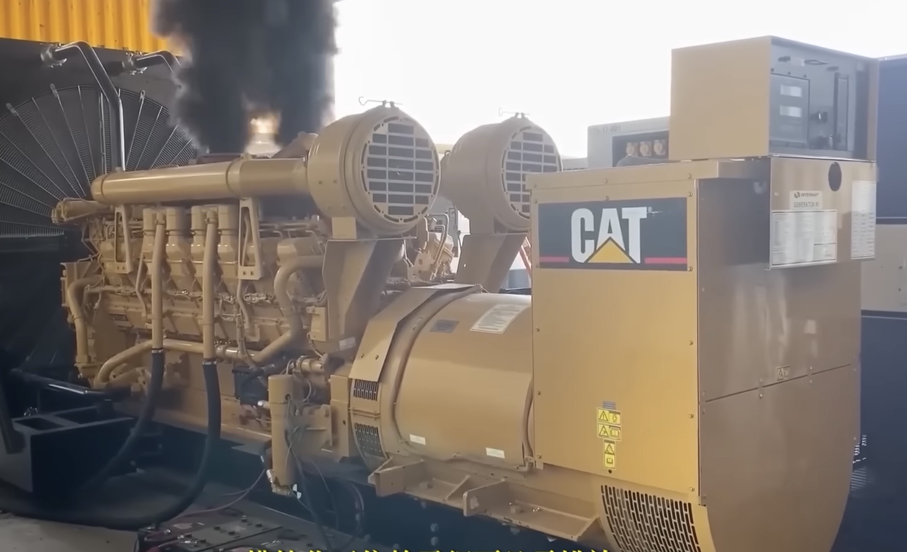
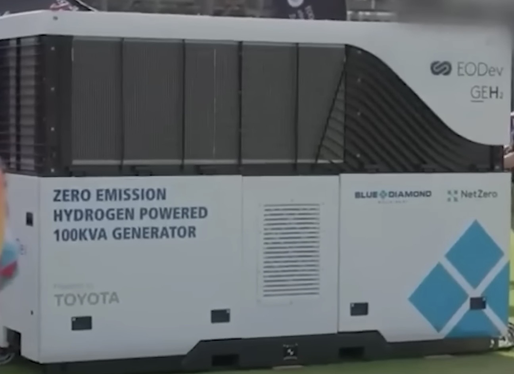

Solid-Fuel Cars: The Cheapest, Most Thermally Efficient, and Pollution-Free Solid-Fuel Engine Will Dominate the Future Automotive Industry
Solid-Fuel Generators: The Smallest, Lightest, Pollution-Free, Portable, and Highest Thermal-Efficiency Solid-Fuel Generator
The actual operation of the solid-fuel six-cylinder piston engine is as follows:
It has the greatest cost advantage and the highest thermal efficiency.
The engine has almost no mechanical components rubbing against each other, so friction is extremely low. When at rest, simply holding the central shaft by hand is enough to make the six-cylinder engine rotate. This feature has not been achieved by any engine to date. As long as there is a slight amount of gas pressure, the engine can be driven, making it the engine with the highest thermal efficiency.
The operating principle of the solid-fuel engine is as follows: The gas that drives the engine is supplied from a storage cylinder similar to that of an air compressor, and this cylinder is fueled by two types of solid fuel.
These two different solid fuels complement and work in synergy, allowing the car to operate smoothly.
Because the use of solid fuel is already relatively mature, once combined with the above-mentioned solid-fuel engine, as long as an automobile manufacturer is willing to invest in research and development, it will quickly bear fruit.
When solid-fuel vehicles are introduced, they will have a lasting and far-reaching impact on the world. For example, the demand for petroleum and rare earth lithium will shrink dramatically, and issues such as global warming and environmental pollution will be significantly improved as a result.
For temporary power generation equipment used in off-grid areas, such as diesel generators or GEH2 generators (as shown in the figure below), both of these devices are excessively large and heavy, not only resulting in high costs but also presenting major drawbacks: diesel generators cause severe pollution, while GEH2 generators still face unresolved challenges of hydrogen storage.
Therefore, the best solution for regions without power supply is a portable solid-fuel generator.
Diesel Generators
GEH2 Generators